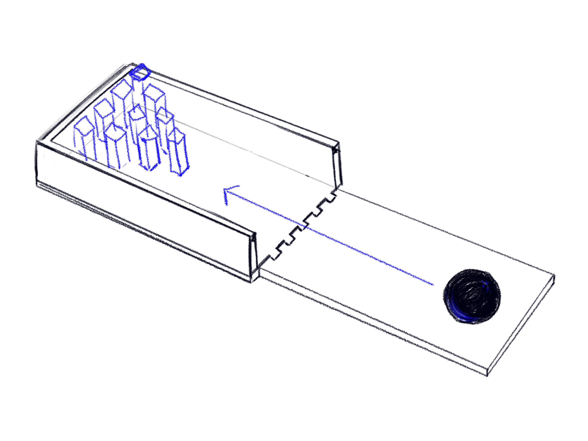

Final Project Proposal
Concept
For my final project, I'd like to make a mini tabletop bowling game!
I thought that this would be a fun thing to make. I'll have a portable game that can fit into my backpack
when finished and designing the storage case will give me a good foundation if I ever want to make more
mini-sized versions of games in the future.
I'll use Rhino to model a
3D-printed storage case
that converts into a bowling alley and model the 3D printed
molds for my silicone molds that will be used to
cast the bowling ball and pins.
I'll utilize Grasshopper to
help model
and adjust the size of the bowling ball and pins, as well as make a 3D printed organizer for the inside of the
storage case to hold the bowling ball and pins so they don't move around when stored or when transporting.
The sketch below showcases how the 3D-printed bowling alley converts into a storage case for the game.
Rendering
I did a simple rendering to showcase what the final result may look like. On the left, there's a rendering of the bowling alley assembled with the bowling ball and pins in place. The right is a view of how the objects will be stored inside the 3D printed container (with the top off).

Task Breakdown
Techniques Applied
Rhino, Grasshopper, Slicing, 3D Printing, Silicone Molds, Casting
1. Modeling the 3D Printed Storage Case
Using Rhino, I'll model the storage case that converts into a bowling alley. The storage
case is composed of three parts: the main body, the half of the alley that doubles as the
containers top, and the closing wall. I'll utilize Grasshopper to ensure that the notches
on the sides of the connecting edges align and are equally spaced apart from each other.
2. Printing the Storage Case
Once the storage case is modeled, I'll print all three pieces.
3. Modeling the Mold for the Silicone Molds
I'll be using silicone molds to cast the bowling ball and pins. The bowling ball will be
cast in a 2-part silicone mold, and the pins will be cast in a single silicone mold.
3 part 2. Modeling the Organizer with Grasshopper
As I'm modeling the molds for the silicone molds, I'll utilize Grasshopper to
additionally model an organizer for the casted objects. This organizer will fit into the storage box.
4. Print the Molds for the Silicone Molds
I'll then print the molds for the silicone molds.
5. Printing the Organizer
Once the printed molds for the silicone molds is finished, I'll start printing the organizer. This
will be my last 3D printed component.
6. Pouring the Silicone
Once the molds for the molds are done printing, I set up my work station to safely mix and pour
the Oommoo 30 silicone into the molds. I'll let the molds cure for at least 6 hours or overnight.
7. Removing the Silicone Molds
In my last silicone mold project, I had to destroy the 3D printed mold to remove the silicone mold. I'm
hoping that won't be the case again this time, but if I need to use the hammer again, it's a nice way to
release stress.
8. Casting the Bowling Ball and Pins
I'll then cast the bowling ball and pins with the alternative plaster I used to produce my Kirbys.
9. Finishing Touches
Once the casts are completed, I'll paint them and then spray the paint with a glossy seal.
10. Assembly and Documentation
All the pieces will be finished at this point, so all there is left is assembly and documentation.
Timeline
Friday @ 11:59PM, 05/21/21:
Finished with storage box model and start prints.
Saturday @ 11:59PM, 05/22/21:
Finished with Rhino model molds. Start printing (or when storage box pieces
finish printing.)
Tuesday @ 11:59PM, 05/25/21:
Finished with organizer model. Start printing.
Wednesday @ 11:59PM, 05/26/21:
Pour silicone and let molds cure.
Saturday @ 11:59PM, 05/29/21:
Finish casting bowling ball and pins.
Monday @ 11:59PM, 05/31/21:
Finish painting and seal casts.
Wednesday @ 3:50PM, 06/02/21:
Finish documentation and present project.
Bill of Materials and Sourcing Schedule
- Ender 3 Pro, owned.
- White Filament for storage case and organizer, owned.
- Filament for molds, owned.
- Alternative casting material, owned (more arriving on 22nd).
- Smooth On Oomoo 30, owned (more arriving on 22nd).
- Paint Finish, owned.
- Glossy Seal Spray, owned.
Access images and in-progress model files on GitHub.